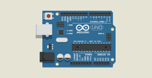
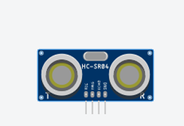
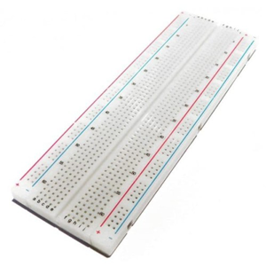
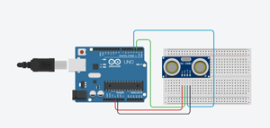

CARA PROGRAM SENSOR ULTRASONIC

Arduino
pengendali mikro single-board yang bersifat open-source. dirancang untk memudahkan penggunaan elektronik dalam berbagai bidang. Hardware dalam arduino memiliki prosesor atmel AVR dan menggunakan software dan bahasa sendiri
Prinsip Kerja Arduino
Arduino merupakan Board Insturmen Elektronik yang tersusun dari Rangkain Perangkat pendukung Chip Mikrokontroler yang ditanamkan didalam sebuah Program. otak dari Arduino sendiri ialah Mikrokontroler yang tertanam pada setiap serinya. Setiap jenis Arduino menggunakan Mikrikintroler yang berbeda sesuai dengan kebutuhannya masing-masing

Sensor Ultrasonic
Sensor yang memiliki fungsi mengubah besaran fisis atau bunyi menjadi besaran listrik dan begitu pula sebaliknya. Gelombang bunyi yamg dihasilkan dari Sensor Ultrasonic ini dapat merambat melalui benda padat, cair maupun udara. Namun dibandingkan dengan benda padat dan udara. benda cair merupakan media merambat yang paling baik untuk Sensor Ultrasonic ini. karena alasan tersebut, Sensor Ultrasonik merupakan Sensor yang paling umum digunakan sebagai radar pada kapal selam untuk mendeteksi keberadaan suatu benda dengan memperkirakan jarak antara Sensor dan benda tersebut.
Prinsip Kerja Sensor Ultrasonic
Gelombang Ultrasonic dibangkitkan melalui Alat yang disebut dengan piozoelektrik dengan Frekuensi tertentu. Piezoelektrik ini akan menghasilkan gelombang Ultrasonic (Umumnya berfrekuensi 40KHz) ketika sebuah osilator diterapkan pada benda tersebut.

Breadbord
Sejenis papan roti yang biasanya digunakan untuk membuat Prototype Rangkaian Elektronik. Beberapa orang kadang menyebutkanya Project Board atau bahkan Protoboard (prototype Board).Biasanya papan Breadboard ini digunakan untuk membuat rangkaian Elektronik sementara untuk tujuan uji coba atau prototype
Prinsip Kerja Breadbord
Papan Breadboard bisa dideskripsikan sebagai papan yang memiliki lubang koneksi bedasarkan pola tertentu.Untuk menghubungkan antara satu lubang dengan lubang yang lain, maka dibagian bawah lubang tersebut terdapat logam konduktor Listrik yang diposisikan secara Khusus. ini berguna untuk memudahkan pengguna dalam membuat rangkaian
Ok Guys. saya tau kamu pasti sudah menunggu untuk postingan ini.Untuk Teman-teman yang yang sudah mempunyai Alatnya,Bisa mencoba Program ini
Alat Yang Dibutuhkan
- Arduino
- Ultrasonik
- Breadbord
- Kabel Jumper Secukupnya
Rangkaian Seperti Gambar Dibawah ini

untuk konfigurasi pinnya mari kita lihat tabel berikut ini.
| # | Pin Ultrasonic | Pin Arduino |
|---|---|---|
| 1 | Pin 1(VCC) | +5v |
| 2 | Pin 2(TRIG) | Pin 2 |
| 3 | Pin 3(ECHO) | Pin 3 | 4 | Pin 4(GND) | GND |
contoh program
// include the library code
int trig=2; // membuat varibel trig yang di set ke-pin 2
int echo=3; // membuat variabel echo yang di set ke-pin 3
long durasi, jarak; // membuat variabel durasi dan jarak
void setup() {
pinMode(trig, OUTPUT); // set pin trig menjadi OUTPUT
pinMode(echo, INPUT); // set pin echo menjadi INPUT
Serial.begin(9600); // digunakan untuk komunikasi Serial dengan komputer
}
void loop() {
// program dibawah ini agar trigger memancarakan suara ultrasonic
digitalWrite(trig, LOW);
delayMicroseconds(8);
digitalWrite(trig, HIGH);
delayMicroseconds(8);
digitalWrite(trig, LOW);
delayMicroseconds(8);
}
Kalau sudah Done.Kamu bisa buka Serial Monitor untuk melihat Jarak dari Sensornya. Coba Untuk Mendekatkan dan Jauhkan Tangan Dari Sensor, dan Lihat Angka Yang Ditampilakn Diserial Monitor